KHÁCH
Bước 1 · Khách mở mã QR trên app
Khách mở màn hình [Mã QR thành viên] trên app của mình và đưa cho lễ tân quét.
Phần 1 · Tiêu điểm và tích điểm cho hội viên | Phần 2 · Dùng và hủy voucher
1.000 point = 1.000 đ
Khách mở màn hình [Mã QR thành viên] trên app của mình và đưa cho lễ tân quét.
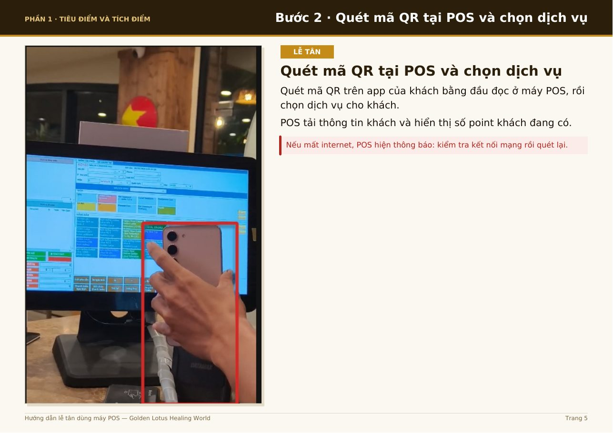
Quét mã QR trên app của khách bằng đầu đọc ở máy POS, rồi chọn dịch vụ cho khách.
POS tải thông tin khách và hiển thị số point khách đang có.
Nếu mất internet, POS hiện thông báo: kiểm tra kết nối mạng rồi quét lại.
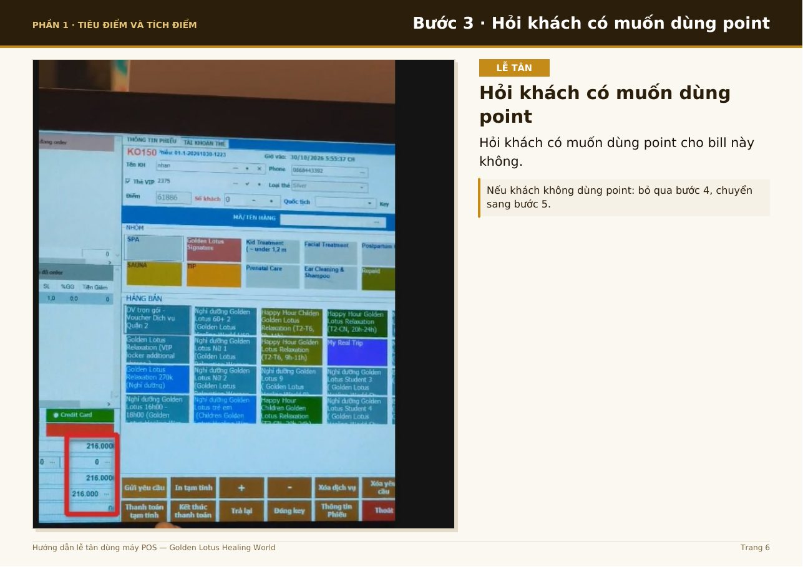
Hỏi khách có muốn dùng point cho bill này không.
Nếu khách không dùng point: bỏ qua bước 4, chuyển sang bước 5.
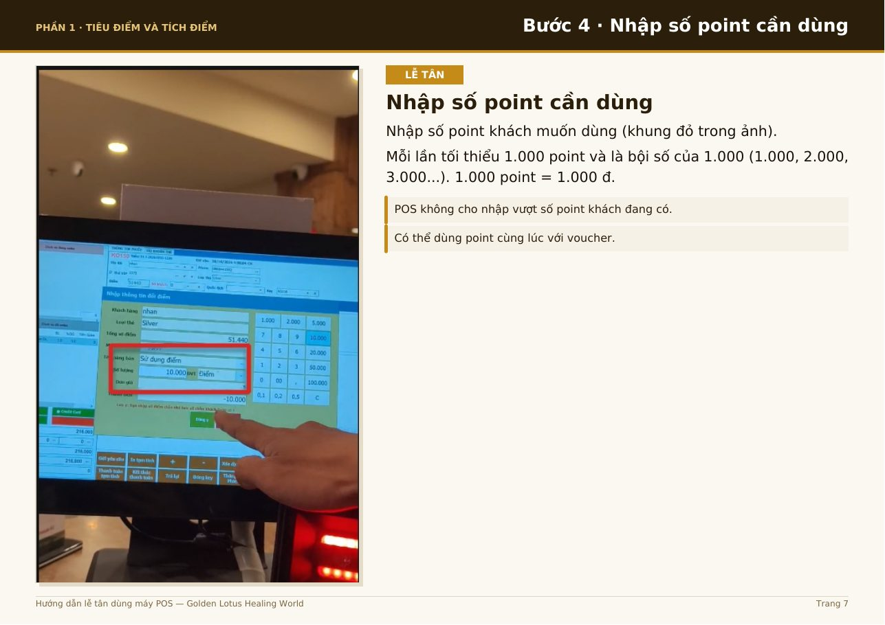
Nhập số point khách muốn dùng (khung đỏ trong ảnh).
Tối thiểu 10.000 point, theo bội số 10.000 (10.000, 20.000…). 1.000 point = 1.000 đ.
Chỉ dùng point khi khách có từ 100.000 point và bill từ 100.000 đ.
POS không cho nhập vượt số point khách đang có.
Có thể dùng point cùng lúc với voucher.
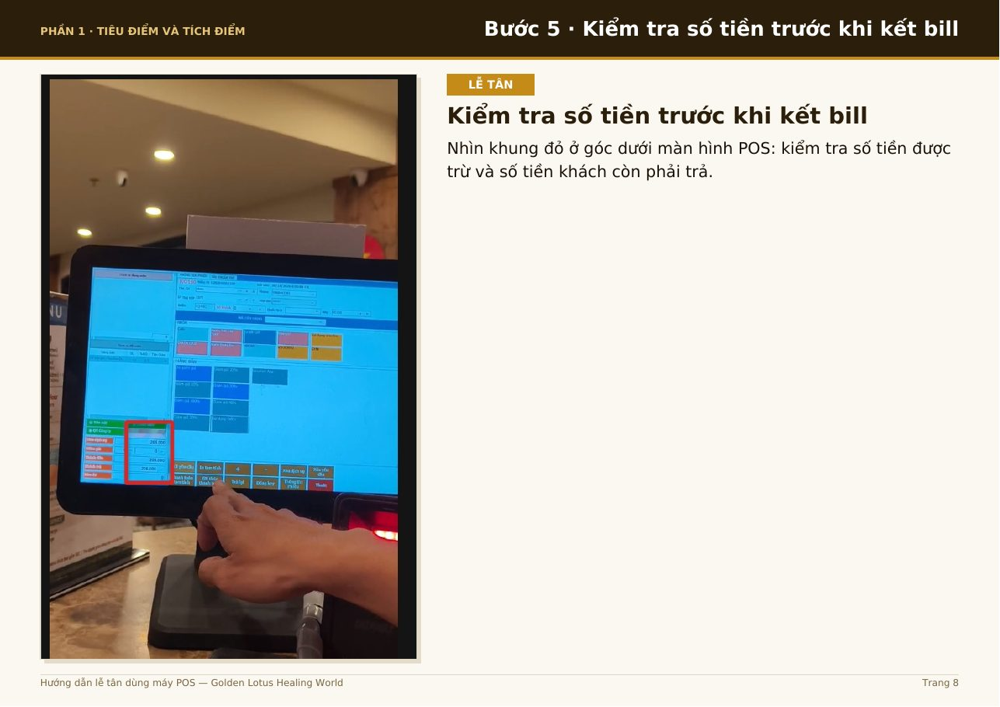
Nhìn khung đỏ ở góc dưới màn hình POS: kiểm tra số tiền được trừ và số tiền khách còn phải trả.
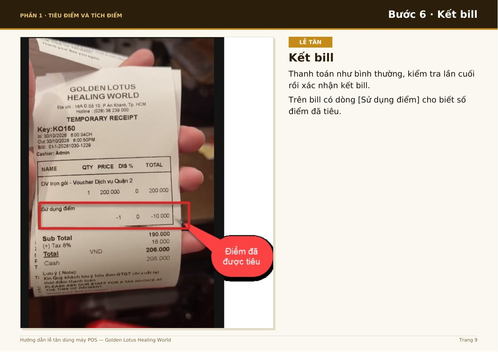
Thanh toán như bình thường, kiểm tra lần cuối rồi xác nhận kết bill.
Trên bill có dòng [Sử dụng điểm] cho biết số điểm đã tiêu.
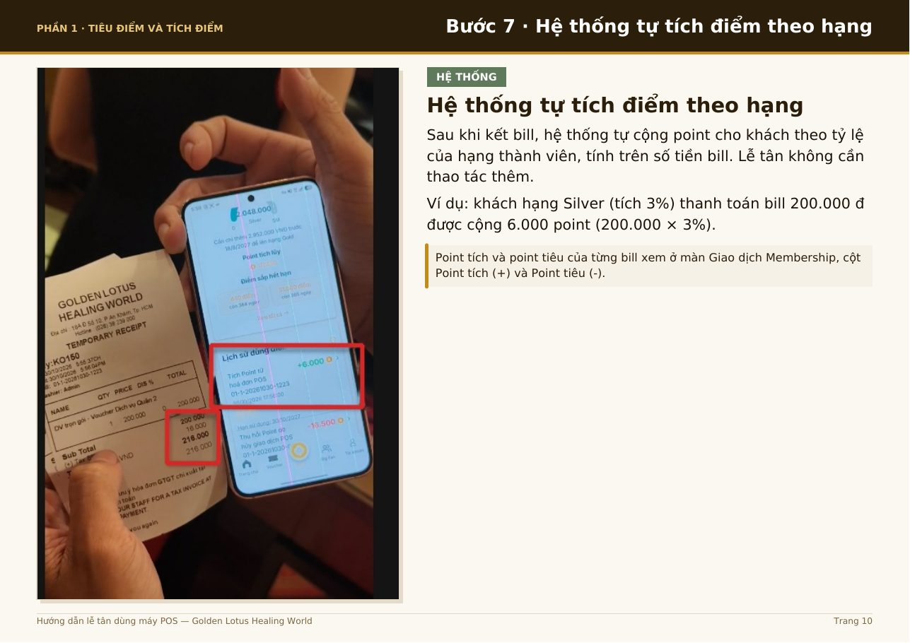
Sau khi kết bill, hệ thống tự cộng point cho khách theo tỷ lệ của hạng thành viên, tính trên số tiền bill. Lễ tân không cần thao tác thêm.
Ví dụ: khách hạng Silver (tích 3%) thanh toán bill 200.000 đ được cộng 6.000 point (200.000 × 3%).
Point tích và point tiêu của từng bill xem ở màn Giao dịch Membership, cột Point tích (+) và Point tiêu (-).
Nguyên tắc nhớ nhanh: Đúng khách – Khách đồng ý – Đúng số point trước khi kết bill.
Voucher: giảm tiền hoặc giảm %
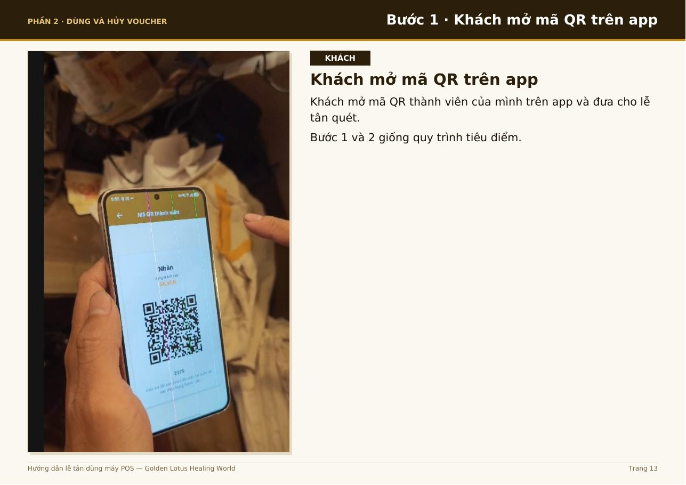
Khách mở mã QR thành viên của mình trên app và đưa cho lễ tân quét.
Bước 1 và 2 giống quy trình tiêu điểm.
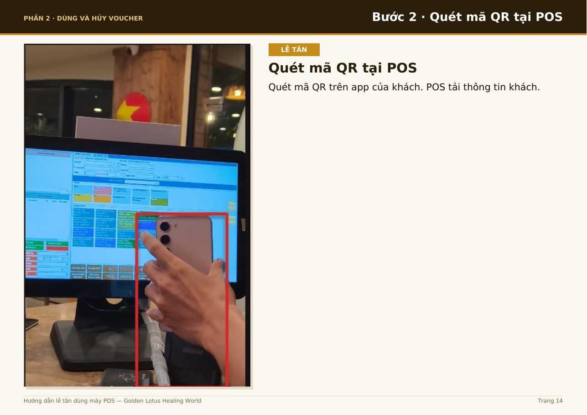
Quét mã QR trên app của khách. POS tải thông tin khách.
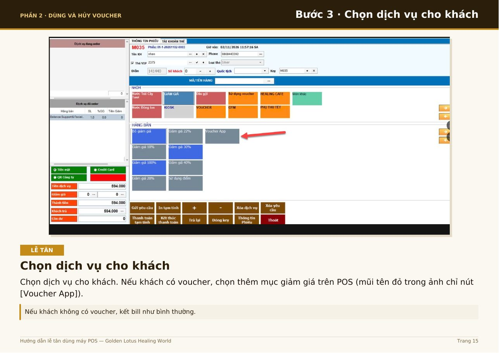
Chọn dịch vụ cho khách. Nếu khách có voucher, chọn thêm mục giảm giá trên POS (mũi tên đỏ trong ảnh chỉ nút [Voucher App]).
Nếu khách không có voucher, kết bill như bình thường.
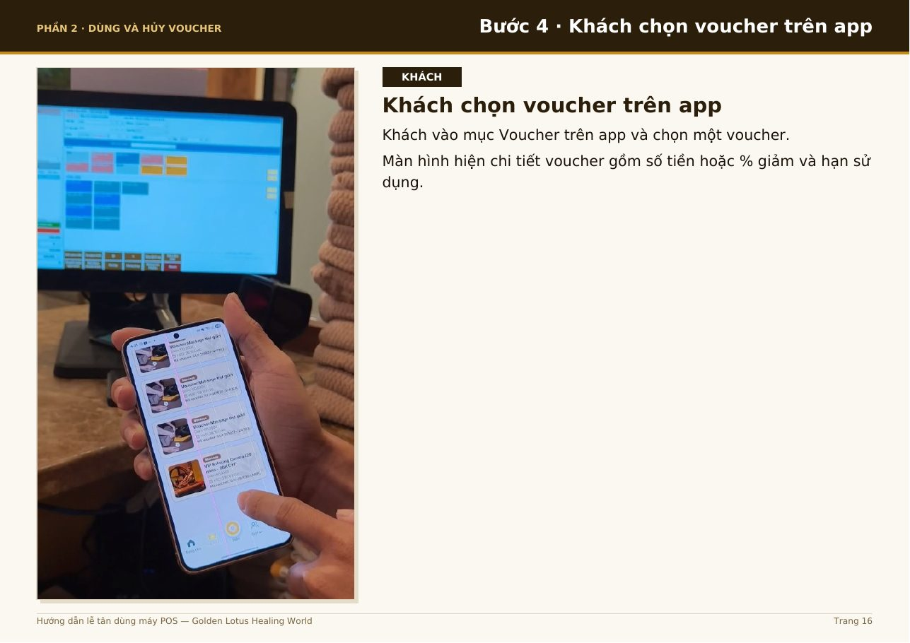
Khách vào mục Voucher trên app và chọn một voucher.
Màn hình hiện chi tiết voucher gồm số tiền hoặc % giảm và hạn sử dụng.
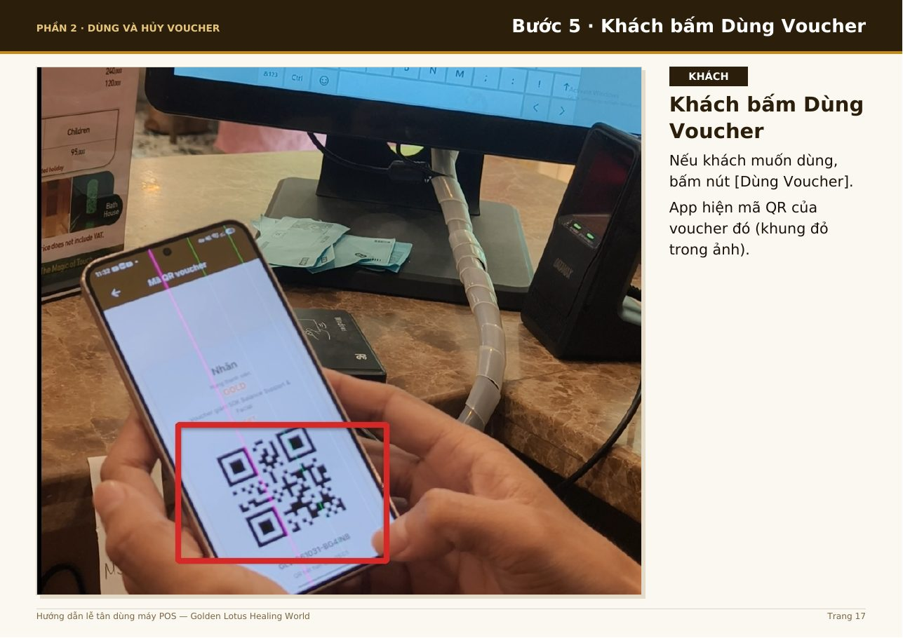
Nếu khách muốn dùng, bấm nút [Dùng Voucher].
App hiện mã QR của voucher đó (khung đỏ trong ảnh).
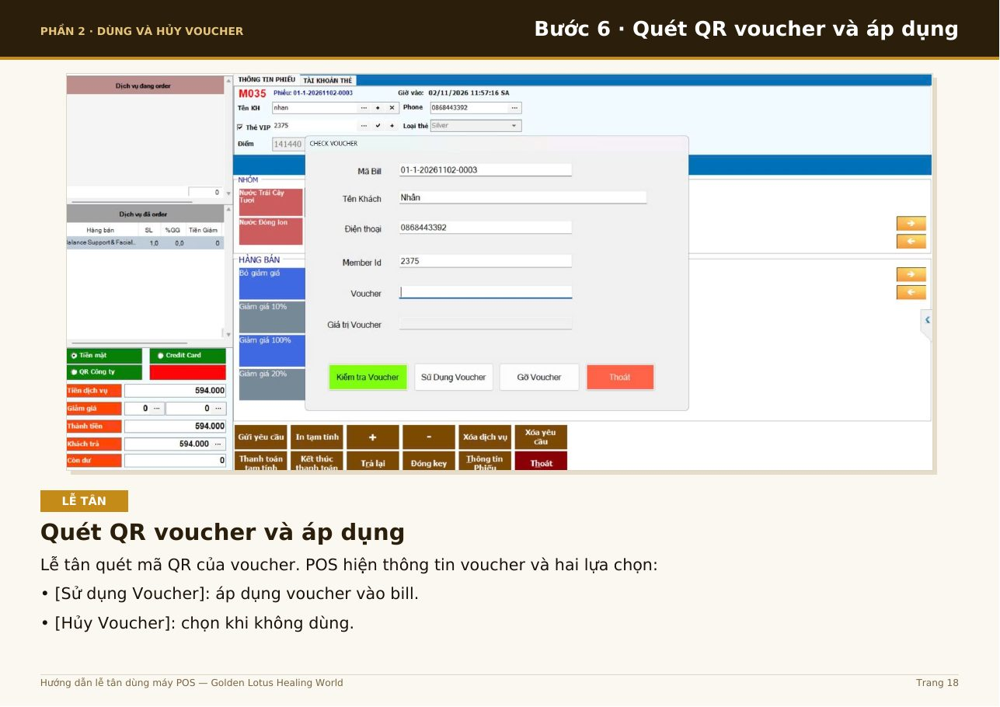
Lễ tân quét mã QR của voucher. POS hiện thông tin voucher và hai lựa chọn:
• [Sử dụng Voucher]: áp dụng voucher vào bill.
• [Hủy Voucher]: chọn khi không dùng.
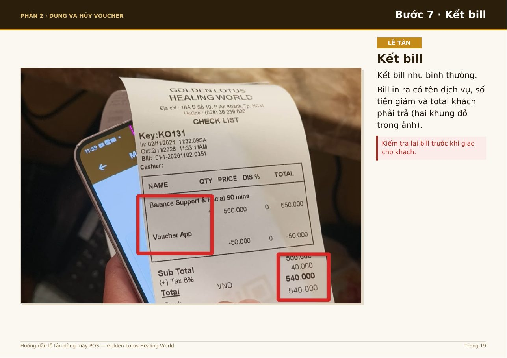
Kết bill như bình thường.
Bill in ra có tên dịch vụ, số tiền giảm và total khách phải trả (hai khung đỏ trong ảnh).
Kiểm tra lại bill trước khi giao cho khách.
Nguyên tắc nhớ nhanh: Đúng khách – Đúng voucher – Đúng số tiền giảm trước khi kết bill.